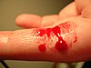

bleeding

Definition: Bleeding, hemorrhage, haemorrhage or blood loss, is blood escaping from the circulatory system from damaged blood vessels. Bleeding can occur internally, or externally either through a natural opening such as the mouth, nose, ear, urethra, vagina or anus, or through a puncture in the skin.
Source: Wikipedia
Wikipedia Page
Wikidata Page